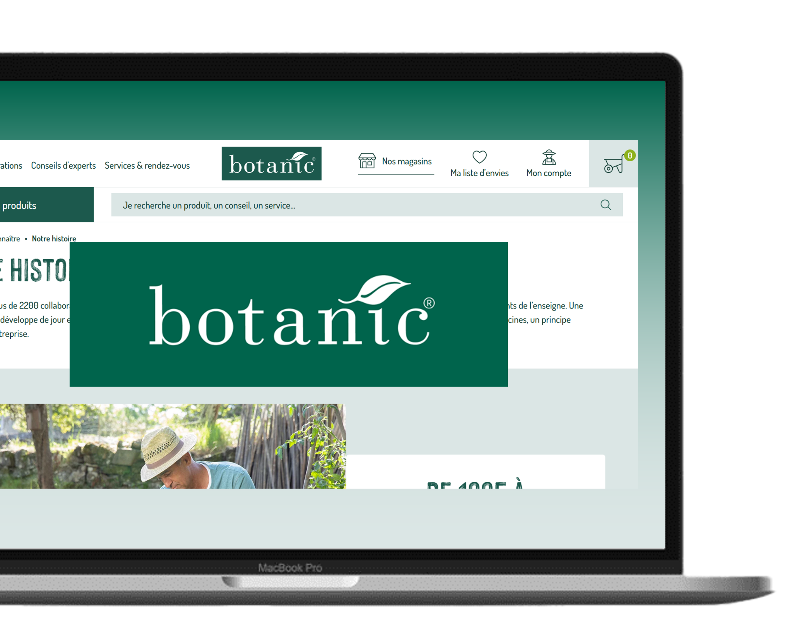

Application développée pour le groupe Botanic, permettant aux salariés de gérer les commandes via une interface intuitive et sécurisée. Elle inclut une page de connexion, des filtres avancés pour rechercher des produits, l’ajout de produits à une commande avec gestion des quantités et du transport, ainsi qu’un suivi des commandes validées. Réalisé en binôme, ce projet a mobilisé des compétences en C#, WPF et gestion de bases de données.